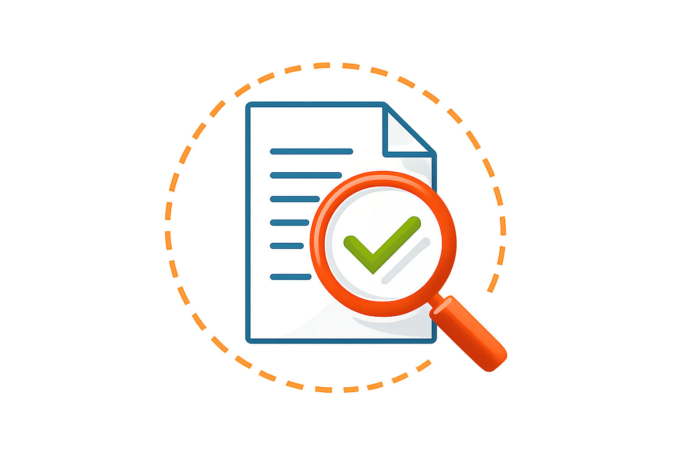

2026

Under Review
Submitted 2026
Don't Overthink: Adaptive Thinking that Does not Fireback for Image Editing using GRPO
Under Review
Submitted 2026
Seeing but not Believing: Reinforce the Visual Clues in VLMs
Under Review
Submitted 2025
Look&Learn: Where to Look? Bridging Perception and Grounding Gap in Vision-Language Models
2025
ICLR 2025
Conference
ToddlerDiffusion: Interactive Structured Image Generation with Cascaded Schrödinger Bridge
EMNLP 2025
Conference
InfiniBench: A Comprehensive Benchmark for Large Multimodal Models in Very Long Video Understanding
2024
ICLR 2024
Conference
CoT3DRef: Chain-of-Thoughts Data-Efficient 3D Visual Grounding
AAAI 2024
Conference